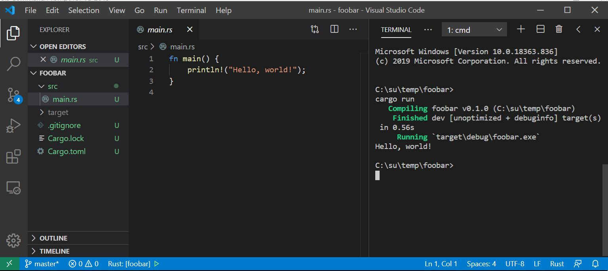

Note:
In order to build and run with cargo from the Visual Studio Code terminal you need to open
VS Code in the package folder for the code you want to build and run. That's the folder where
the package cargo.toml file resides.
If you open VS Code and, using the file menu, open the folder you created above, you will see
a cargo.toml file, which holds metadata for the package, and a src folder. Open that and select
main.rs. There you will see a main function which simply prints "hello world" in your
terminal.

That's all there is to do to get started.